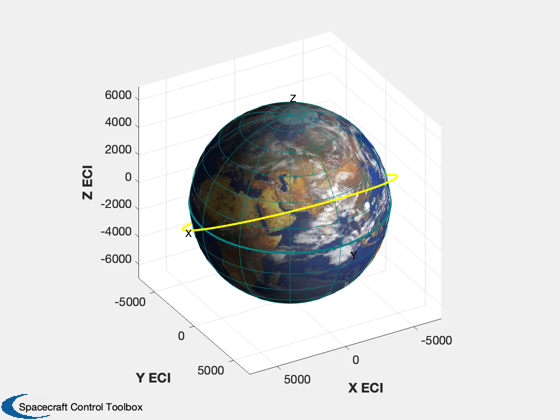
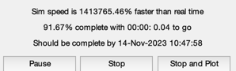
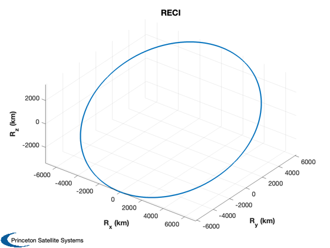
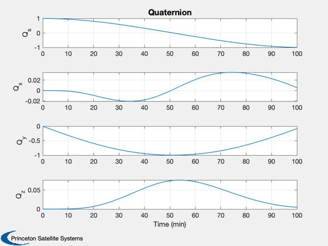
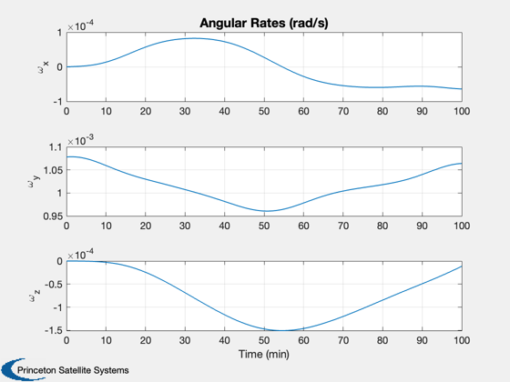
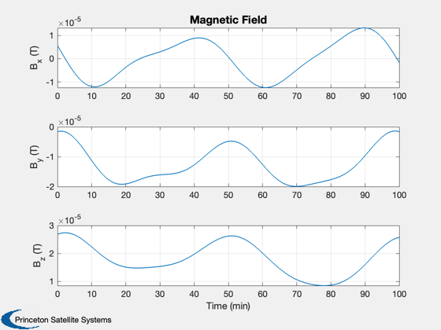
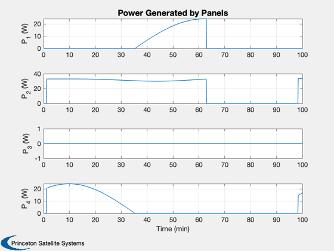
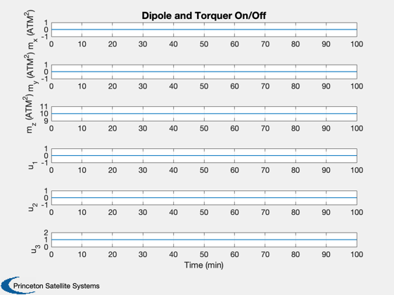

Demonstrates magnetic control and power profiles.
Six DOF simulation with point mass orbit, rigid body dynamics, and the magnetic torque handled explicitly in the RHS. Satellite is modeled with three magnetic torquers and four solar panels. ------------------------------------------------------------------------- See also MagField and FRBWithMag, QForm, Constant, NPlot, Plot2D, Plot3D, PrintFig, TimeGUI, TimeLabl, RK4, Date2JD, OrbRate, El2RV, PltOrbit, Eclipse, SunV1 -------------------------------------------------------------------------
Contents
- Print plots to eps file
- Global for the TimeGUI
- Constants
- Power system - 4 solar panels
- Torquers
- The control sampling period and the simulation integration time step
- Number of sim steps
- Plot every nPMax steps
- Print the time to go message every nTTGo steps
- Gravity model
- The external disturbance model
- Spacecraft inertia
- Plotting arrays
- Magnetic field
- Epoch
- Orbit
- OrbRate function -
- Initial conditions [r;v;q;omega]
- Plotting controls
- Initialize the time display
- Run the simulation
- Adjust the plotting arrays if you stopped early
- Nice units for time
- Plotting function
- Save plots as eps files
%-------------------------------------------------------------------------- % Copyright (c) 1995-2004, 2008, 2016 Princeton Satellite Systems, Inc. % All rights reserved. %-------------------------------------------------------------------------- % 2016.1 Switch to newer IGRF11 model (from 1995 data) for the Earth. Also % change RHS to a function handle. %-------------------------------------------------------------------------- clear d
Print plots to eps file
%-------------------------
printPlots = 0;
Global for the TimeGUI
%------------------------ global simulationAction simulationAction = ' ';
Constants
%-----------
degToRad = pi/180;
radToDeg = 180/pi;
c45 = cos(45*degToRad);
Power system - 4 solar panels
%------------------------------- % assume same area and efficiency for all panels pEff = 0.15; pSun = 1367; % solar flux, Watts/m^2 areaPanel = 0.2; % m^2 fPanel = pEff*pSun*areaPanel; uPanel = [1 0 0 -1;0 1 -1 0;0 0 0 0]; % 4 unit vectors
Torquers
%---------- mTorquer = 10*eye(3); % 3 orthogonal torquers uDipole = [0;0;1]; % The control (on/off flags)
The control sampling period and the simulation integration time step
---------------------------------------------------------------------
dTSim = 1; % sec
Number of sim steps
--------------------
nSim = 6000; % sec
tEnd = nSim*dTSim;
Plot every nPMax steps
-----------------------
nPMax = 1; nPlot = nSim/nPMax;
Print the time to go message every nTTGo steps
%------------------------------------------------
nTTGo = 100;
Gravity model
%--------------- d.mu = Constant('mu earth');
The external disturbance model
-------------------------------
d.tExt = [0.0;0.0;0.0];
Spacecraft inertia
-------------------
d.inr = [2000,0,0;0,4000,0;0,0,2000]; d.invInr = inv(d.inr);
Plotting arrays
----------------
tPlot = zeros( 1,nPlot); xPlot = zeros(26,nPlot);
Magnetic field
%---------------- magFieldData = load('IGRF11');
Epoch
%------- jD = Date2JD([2004 7 21 0 0 0]); % Julian date
Orbit
%------- sma = 7000; % km inc = 0.5; % rad el = [sma inc 0 0 0 0]; [r0,v0] = El2RV(el); PltOrbit( el, jD );
OrbRate function -
r is radius; d.mu is Gravitational parameter;
Orbit_Rate = @( r ) sqrt(d.mu*(2./r - 1./r))./r;
Initial conditions [r;v;q;omega]
%---------------------------------- q0 = [1;0;0;0]; % ECI to body frame w0 = [0;Orbit_Rate(7000);0]; % rad/s x = [r0; v0; q0; w0]; % r in km and v in km/s t = 0;
Plotting controls
%-------------------
nP = 0;
kP = 0;
Initialize the time display
%----------------------------- [ ratioRealTime, tToGoMem ] = TimeGUI( nSim, 0, [], 0, dTSim, 'Magnetic Control Sim' );
Run the simulation
-------------------
for k = 1:nSim % The sun vector in the body frame %--------------------------------- [uSun,rSun] = SunV1( jD ); uSunBody = QForm( x(7:10), uSun ); n = Eclipse( x(1:3), rSun*uSun ); % Power %------ f = uSunBody'*uPanel; % find panels facing away from sun and set power to zero j = find(f < 0); f(j) = 0; % multiply power factor times cos(angle) to the sun, including eclipses pPanel = n*fPanel*f; % Control - compute total dipole %------------------------------- d.dipole = [0;0;0]; for j = 1:length(uDipole) if( uDipole(j) == 1 ) d.dipole = d.dipole + mTorquer(:,j); end end % The magnetic field %------------------- d.bECI = MagField( x(1:3), jD, 2, magFieldData ); % Display the status message %--------------------------- [ ratioRealTime, tToGoMem ] = TimeGUI( nSim, k, tToGoMem, ratioRealTime, dTSim ); % Integrate one time step %------------------------ x = RK4( @FRBWithMag, x, dTSim, t, d ); % Update the time %---------------- t = t + dTSim; jD = jD + dTSim/86400; % Plotting % -------- if( nP == 0 ) kP = kP + 1; xPlot(:,kP) = [x;d.bECI;pPanel';d.dipole;uDipole]; tPlot(kP) = t; nP = nPMax - 1; else nP = nP - 1; end % Time control %------------- switch simulationAction case 'pause' pause simulationAction = ' '; case 'stop' return; case 'plot' break; end end
Adjust the plotting arrays if you stopped early
%-------------------------------------------------
j = 1:kP;
tPlot = tPlot(j);
xPlot = xPlot(:,j);
Nice units for time
%---------------------
[tPlot,tL] = TimeLabl( tPlot );
Plotting function
%------------------- Plot3D( xPlot( 1: 3,:),'R_x (km)','R_y (km)','R_z (km)', 'RECI' ); Plot2D( tPlot, xPlot( 7:10,:), tL, {'Q_s';'Q_x';'Q_y';'Q_z'}, 'Quaternion' ) Plot2D( tPlot, xPlot(11:13,:), tL, {'\omega_x';'\omega_y';'\omega_z'}, 'Angular Rates (rad/s)' ) Plot2D( tPlot, xPlot(14:16,:), tL, {'B_x (T)';'B_y (T)';'B_z (T)'}, 'Magnetic Field') Plot2D( tPlot, xPlot(17:20,:), tL, {'P_1 (W)';'P_2 (W)';'P_3 (W)'; 'P_4 (W)'}, 'Power Generated by Panels') Plot2D( tPlot, xPlot(21:26,:), tL, {'m_x (ATM^2)' 'm_y (ATM^2)' 'm_z (ATM^2)' 'u_1' 'u_2' 'u_3'}, 'Dipole and Torquer On/Off')     
Save plots as eps files
%------------------------- if( printPlots ) PrintFig(0,1,1,'Mag_R'); PrintFig(0,1,2,'Mag_V'); PrintFig(0,1,3,'Mag_Q'); PrintFig(0,1,4,'Mag_Omega'); PrintFig(0,1,5,'Mag_B'); PrintFig(0,1,5,'Power'); end %-------------------------------------- % $Date$ % $Id: 90483cb005f29e19ce2019a5b2460eff8367677c $